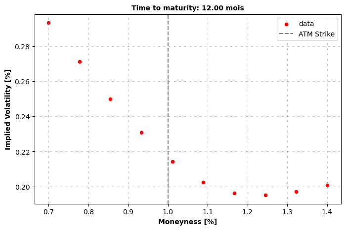
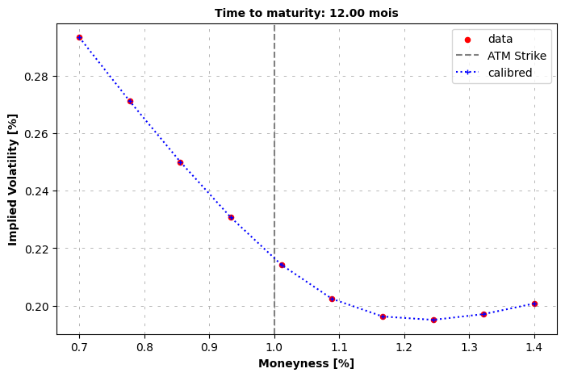
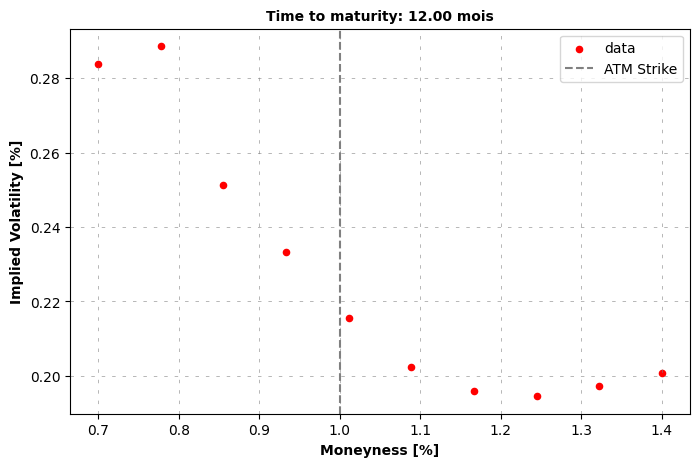

With syntetic market price#
[1]:
from hestonpy.models.heston import Heston
from hestonpy.models.bates import Bates
from hestonpy.models.calibration.volatilitySmile import VolatilitySmile
import matplotlib.pyplot as plt
import numpy as np
r = 0.00
[2]:
spot = 100
time_to_maturity = 1
true_params = {
"vol_initial": 0.06,
"kappa": 1.25,
"theta": 0.06,
"sigma": 0.6,
"rho": -0.5,
"drift_emm": 0.00,
}
vol = np.sqrt(0.04)
heston = Heston(spot=spot, r=r, **true_params)
price_function = heston.call_price
strikes = np.linspace(70, 140, 10)
Without noise#
[3]:
market_prices = price_function(**true_params, strike=strikes, time_to_maturity=time_to_maturity, s=spot)
volSmile = VolatilitySmile(
strikes=strikes,
time_to_maturity=time_to_maturity,
atm=spot,
market_prices=market_prices,
r=r
)
volSmile.plot()

Local optimization (might not be global)
[5]:
calibrated_params = volSmile.calibration(
price_function=price_function,
initial_guess = [1.0, 0.03, 0.4, -0.5],
guess_correlation_sign='negative',
speed='local',
)
calibrated_heston = Heston(spot=spot, r=r, **calibrated_params)
volSmile.plot(calibrated_prices=heston.call_price(strike=strikes, time_to_maturity=time_to_maturity))
calibrated_params
Calibrated parameters: v0=0.046 | kappa=0.985 | theta=0.085 | sigma=0.580 | rho=-0.506

[5]:
{'vol_initial': np.float64(0.04589503493265889),
'kappa': np.float64(0.9849851420478373),
'theta': np.float64(0.08456116488309652),
'sigma': np.float64(0.580145120734101),
'rho': np.float64(-0.5063722128514593),
'drift_emm': 0}
[6]:
true_params
[6]:
{'vol_initial': 0.06,
'kappa': 1.25,
'theta': 0.06,
'sigma': 0.6,
'rho': -0.5,
'drift_emm': 0.0}
Global optimization
[8]:
calibrated_params = volSmile.calibration(
price_function=price_function,
initial_guess = [1.0, 0.03, 0.4, -0.5],
guess_correlation_sign='negative',
speed='global',
)
calibrated_heston = Heston(spot=spot, r=r, **calibrated_params)
volSmile.plot(calibrated_prices=heston.call_price(strike=strikes, time_to_maturity=time_to_maturity))
calibrated_params
at minimum 0.000002 accepted 1
Parameters: kappa=0.985 | theta=0.085 | sigma=0.580 | rho=-0.506
at minimum 0.000319 accepted 1
Parameters: kappa=0.009 | theta=2.813 | sigma=0.388 | rho=-0.520
at minimum 0.000319 accepted 1
Parameters: kappa=0.009 | theta=2.821 | sigma=0.388 | rho=-0.520
at minimum 0.000320 accepted 1
Parameters: kappa=0.009 | theta=3.000 | sigma=0.388 | rho=-0.520
at minimum 0.000319 accepted 1
Parameters: kappa=0.009 | theta=2.814 | sigma=0.388 | rho=-0.520
at minimum 0.000319 accepted 1
Parameters: kappa=0.009 | theta=2.883 | sigma=0.388 | rho=-0.520
['success condition satisfied'] True
Calibrated parameters: v0=0.046 | kappa=0.985 | theta=0.085 | sigma=0.580 | rho=-0.506

[8]:
{'vol_initial': np.float64(0.04589503493265889),
'kappa': np.float64(0.9849851420478373),
'theta': np.float64(0.08456116488309652),
'sigma': np.float64(0.580145120734101),
'rho': np.float64(-0.5063722128514593),
'drift_emm': 0}
[9]:
true_params
[9]:
{'vol_initial': 0.06,
'kappa': 1.25,
'theta': 0.06,
'sigma': 0.6,
'rho': -0.5,
'drift_emm': 0.0}
with noise
[10]:
market_prices = market_prices * (1 + np.random.normal(scale=0.01, size=len(market_prices))) # a little of market noise
volSmile = VolatilitySmile(
strikes=strikes,
time_to_maturity=time_to_maturity,
atm=spot,
market_prices=market_prices,
r=r
)
volSmile.plot()

[11]:
calibrated_params = volSmile.calibration(
price_function=price_function,
initial_guess = [1.0, 0.03, 0.4, -0.5],
guess_correlation_sign='negative',
speed='local',
)
calibrated_heston = Heston(spot=spot, r=r, **calibrated_params)
volSmile.plot(calibrated_prices=heston.call_price(strike=strikes, time_to_maturity=time_to_maturity))
calibrated_params
Calibrated parameters: v0=0.046 | kappa=0.021 | theta=1.476 | sigma=0.417 | rho=-0.542

[11]:
{'vol_initial': np.float64(0.04647240867107085),
'kappa': np.float64(0.02057993693658569),
'theta': np.float64(1.475751237282687),
'sigma': np.float64(0.41671804646099125),
'rho': np.float64(-0.5417957836420847),
'drift_emm': 0}
[12]:
calibrated_params = volSmile.calibration(
price_function=price_function,
initial_guess = [1.0, 0.03, 0.4, -0.5],
guess_correlation_sign='negative',
speed='global',
)
calibrated_heston = Heston(spot=spot, r=r, **calibrated_params)
volSmile.plot(calibrated_prices=heston.call_price(strike=strikes, time_to_maturity=time_to_maturity))
calibrated_params
at minimum 0.014711 accepted 1
Parameters: kappa=0.021 | theta=1.476 | sigma=0.417 | rho=-0.542
at minimum 0.014711 accepted 1
Parameters: kappa=0.019 | theta=1.627 | sigma=0.416 | rho=-0.542
at minimum 0.014711 accepted 1
Parameters: kappa=0.021 | theta=1.467 | sigma=0.417 | rho=-0.542
at minimum 0.014711 accepted 1
Parameters: kappa=0.019 | theta=1.576 | sigma=0.416 | rho=-0.542
at minimum 0.014710 accepted 1
Parameters: kappa=0.015 | theta=1.967 | sigma=0.416 | rho=-0.542
at minimum 0.014711 accepted 1
Parameters: kappa=0.017 | theta=1.818 | sigma=0.416 | rho=-0.542
at minimum 0.014710 accepted 1
Parameters: kappa=0.015 | theta=2.006 | sigma=0.416 | rho=-0.542
at minimum 0.014711 accepted 1
Parameters: kappa=0.018 | theta=1.685 | sigma=0.416 | rho=-0.542
at minimum 0.014715 accepted 1
Parameters: kappa=0.041 | theta=0.777 | sigma=0.421 | rho=-0.542
at minimum 0.014711 accepted 1
Parameters: kappa=0.018 | theta=1.705 | sigma=0.416 | rho=-0.542
at minimum 0.014711 accepted 1
Parameters: kappa=0.021 | theta=1.446 | sigma=0.417 | rho=-0.542
['requested number of basinhopping iterations completed successfully'] True
Calibrated parameters: v0=0.046 | kappa=0.015 | theta=2.006 | sigma=0.416 | rho=-0.542

[12]:
{'vol_initial': np.float64(0.04647240867107085),
'kappa': np.float64(0.014974674425261712),
'theta': np.float64(2.0063921582063933),
'sigma': np.float64(0.41561958352269357),
'rho': np.float64(-0.5419272956890451),
'drift_emm': 0}